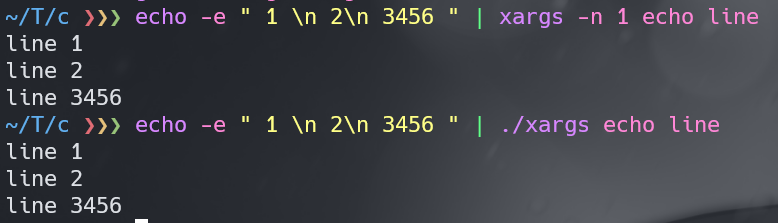

lab1: Util
sleep
这个简单，不多说了
#include "kernel/types.h"
#include "user/user.h"
int main(int argc, char const *argv[])
{
if (argc != 2) { //参数错误
fprintf(2, "usage: sleep <time>\n");
exit(1);
}
sleep(atoi(argv[1]));
exit(0);
}
pingpong
使用两个管道进行父子进程通信，需要注意的是如果管道的写端没有close，那么管道中数据为空时对管道的读取将会阻塞。因此对于不需要的管道描述符，要尽可能早的关闭。
#include "kernel/types.h"
#include "user/user.h"
#define RD 0 //pipe的read端
#define WR 1 //pipe的write端
int main(int argc, char const *argv[]) {
char buf = 'P'; //用于传送的字节
int fd_c2p[2]; //子进程->父进程
int fd_p2c[2]; //父进程->子进程
pipe(fd_c2p);
pipe(fd_p2c);
int pid = fork();
int exit_status = 0;
if (pid < 0) {
fprintf(2, "fork() error!\n");
close(fd_c2p[RD]);
close(fd_c2p[WR]);
close(fd_p2c[RD]);
close(fd_p2c[WR]);
exit(1);
} else if (pid == 0) { //子进程
close(fd_p2c[WR]);
close(fd_c2p[RD]);
if (read(fd_p2c[RD], &buf, sizeof(char)) != sizeof(char)) {
fprintf(2, "child read() error!\n");
exit_status = 1; //标记出错
} else {
fprintf(1, "%d: received ping\n", getpid());
}
if (write(fd_c2p[WR], &buf, sizeof(char)) != sizeof(char)) {
fprintf(2, "child write() error!\n");
exit_status = 1;
}
close(fd_p2c[RD]);
close(fd_c2p[WR]);
exit(exit_status);
} else { //父进程
close(fd_p2c[RD]);
close(fd_c2p[WR]);
if (write(fd_p2c[WR], &buf, sizeof(char)) != sizeof(char)) {
fprintf(2, "parent write() error!\n");
exit_status = 1;
}
if (read(fd_c2p[RD], &buf, sizeof(char)) != sizeof(char)) {
fprintf(2, "parent read() error!\n");
exit_status = 1; //标记出错
} else {
fprintf(1, "%d: received pong\n", getpid());
}
close(fd_p2c[WR]);
close(fd_c2p[RD]);
exit(exit_status);
}
}
primes
这个感觉还是有些难度的，它的思想是多进程版本的递归，不断地将左邻居管道中的数据筛选后传送给右邻居，每次传送的第一个数据都将是一个素数。
具体还是看代码吧，里面注释应该还是比较清楚的
#include "kernel/types.h"
#include "user/user.h"
#define RD 0
#define WR 1
const uint INT_LEN = sizeof(int);
/**
* @brief 读取左邻居的第一个数据
* @param lpipe 左邻居的管道符
* @param pfirst 用于存储第一个数据的地址
* @return 如果没有数据返回-1,有数据返回0
*/
int lpipe_first_data(int lpipe[2], int *dst)
{
if (read(lpipe[RD], dst, sizeof(int)) == sizeof(int)) {
printf("prime %d\n", *dst);
return 0;
}
return -1;
}
/**
* @brief 读取左邻居的数据，将不能被first整除的写入右邻居
* @param lpipe 左邻居的管道符
* @param rpipe 右邻居的管道符
* @param first 左邻居的第一个数据
*/
void transmit_data(int lpipe[2], int rpipe[2], int first)
{
int data;
// 从左管道读取数据
while (read(lpipe[RD], &data, sizeof(int)) == sizeof(int)) {
// 将无法整除的数据传递入右管道
if (data % first)
write(rpipe[WR], &data, sizeof(int));
}
close(lpipe[RD]);
close(rpipe[WR]);
}
/**
* @brief 寻找素数
* @param lpipe 左邻居管道
*/
void primes(int lpipe[2])
{
close(lpipe[WR]);
int first;
if (lpipe_first_data(lpipe, &first) == 0) {
int p[2];
pipe(p); // 当前的管道
transmit_data(lpipe, p, first);
if (fork() == 0) {
primes(p); // 递归的思想，但这将在一个新的进程中调用
} else {
close(p[RD]);
wait(0);
}
}
exit(0);
}
int main(int argc, char const *argv[])
{
int p[2];
pipe(p);
for (int i = 2; i <= 35; ++i) //写入初始数据
write(p[WR], &i, INT_LEN);
if (fork() == 0) {
primes(p);
} else {
close(p[WR]);
close(p[RD]);
wait(0);
}
exit(0);
}
find
感觉没什么好说的0.0，代码基本上都是COPY的ls.c中的内容
#include "kernel/types.h"
#include "kernel/fs.h"
#include "kernel/stat.h"
#include "user/user.h"
void find(char *path, const char *filename)
{
char buf[512], *p;
int fd;
struct dirent de;
struct stat st;
if ((fd = open(path, 0)) < 0) {
fprintf(2, "find: cannot open %s\n", path);
return;
}
if (fstat(fd, &st) < 0) {
fprintf(2, "find: cannot fstat %s\n", path);
close(fd);
return;
}
//参数错误，find的第一个参数必须是目录
if (st.type != T_DIR) {
fprintf(2, "usage: find <DIRECTORY> <filename>\n");
return;
}
if (strlen(path) + 1 + DIRSIZ + 1 > sizeof buf) {
fprintf(2, "find: path too long\n");
return;
}
strcpy(buf, path);
p = buf + strlen(buf);
*p++ = '/'; //p指向最后一个'/'之后
while (read(fd, &de, sizeof de) == sizeof de) {
if (de.inum == 0)
continue;
memmove(p, de.name, DIRSIZ); //添加路径名称
p[DIRSIZ] = 0; //字符串结束标志
if (stat(buf, &st) < 0) {
fprintf(2, "find: cannot stat %s\n", buf);
continue;
}
//不要在“.”和“..”目录中递归
if (st.type == T_DIR && strcmp(p, ".") != 0 && strcmp(p, "..") != 0) {
find(buf, filename);
} else if (strcmp(filename, p) == 0)
printf("%s\n", buf);
}
close(fd);
}
int main(int argc, char *argv[])
{
if (argc != 3) {
fprintf(2, "usage: find <directory> <filename>\n");
exit(1);
}
find(argv[1], argv[2]);
exit(0);
}
xargs
之前这个题目我是做错的，但是仍然通过了测试。需要注意的是题目中要求为每一行执行一个命令。之前刷力扣的时候处理字符串好几次用到了有限状态自动机，虽然写的代码比较多，但是只要搞清楚逻辑，这种方法反而比较容易写出来。
xv6中的echo命令并不能输出换行符，例如在xv6和linux中执行命令
xv6执行echo "1\n2"输出
"1\n2"
linux执行echo -e "1\n2"输出（-e启用转义）
1
2
因此没有想到如何在xv6中验证xargs的正确性，于是我将类似（类似是因为头文件不同，且将exec替换为了execvp）的代码xargs.c在linux下编译并测试运行，如下图所示：第一条命令是使用linux中xargs的输出，第二条命令是使用自己写的xargs的输出，二者是一致的。

有限状态自动机主要就是一系列的状态转换，例如对于
1 \n 23
0123 456
来说，第一行是待读取的字符串，第二行是字符下标，起始时状态为S_WAIT，状态转换如下
读取到0处的空格 状态由S_WAIT变为S_WAIT，继续等待参数到来（arg_beg前移）
读取到1处的字符1 状态由S_WAIT变为S_ARG，开始读取参数（arg_beg不动）
读取到2处的空格 状态由S_ARG变为S_ARG_END，储存参数地址（将lines[arg_beg]的地址存入x_argv中）
读取到3处的换行 状态由S_ARG_END变为S_LINE_END，fork后执行程序
...以此类推
#include "kernel/types.h"
#include "user/user.h"
#include "kernel/param.h"
#define MAXSZ 512
// 有限状态自动机状态定义
enum state {
S_WAIT, // 等待参数输入，此状态为初始状态或当前字符为空格
S_ARG, // 参数内
S_ARG_END, // 参数结束
S_ARG_LINE_END, // 左侧有参数的换行，例如"arg\n"
S_LINE_END, // 左侧为空格的换行，例如"arg \n""
S_END // 结束，EOF
};
// 字符类型定义
enum char_type {
C_SPACE,
C_CHAR,
C_LINE_END
};
/**
* @brief 获取字符类型
*
* @param c 待判定的字符
* @return enum char_type 字符类型
*/
enum char_type get_char_type(char c)
{
switch (c) {
case ' ':
return C_SPACE;
case '\n':
return C_LINE_END;
default:
return C_CHAR;
}
}
/**
* @brief 状态转换
*
* @param cur 当前的状态
* @param ct 将要读取的字符
* @return enum state 转换后的状态
*/
enum state transform_state(enum state cur, enum char_type ct)
{
switch (cur) {
case S_WAIT:
if (ct == C_SPACE) return S_WAIT;
if (ct == C_LINE_END) return S_LINE_END;
if (ct == C_CHAR) return S_ARG;
break;
case S_ARG:
if (ct == C_SPACE) return S_ARG_END;
if (ct == C_LINE_END) return S_ARG_LINE_END;
if (ct == C_CHAR) return S_ARG;
break;
case S_ARG_END:
case S_ARG_LINE_END:
case S_LINE_END:
if (ct == C_SPACE) return S_WAIT;
if (ct == C_LINE_END) return S_LINE_END;
if (ct == C_CHAR) return S_ARG;
break;
default:
break;
}
return S_END;
}
/**
* @brief 将参数列表后面的元素全部置为空
* 用于换行时，重新赋予参数
*
* @param x_argv 参数指针数组
* @param beg 要清空的起始下标
*/
void clearArgv(char *x_argv[MAXARG], int beg)
{
for (int i = beg; i < MAXARG; ++i)
x_argv[i] = 0;
}
int main(int argc, char *argv[])
{
if (argc - 1 >= MAXARG) {
fprintf(2, "xargs: too many arguments.\n");
exit(1);
}
char lines[MAXSZ];
char *p = lines;
char *x_argv[MAXARG] = {0}; // 参数指针数组，全部初始化为空指针
// 存储原有的参数
for (int i = 1; i < argc; ++i) {
x_argv[i - 1] = argv[i];
}
int arg_beg = 0; // 参数起始下标
int arg_end = 0; // 参数结束下标
int arg_cnt = argc - 1; // 当前参数索引
enum state st = S_WAIT; // 起始状态置为S_WAIT
while (st != S_END) {
// 读取为空则退出
if (read(0, p, sizeof(char)) != sizeof(char)) {
st = S_END;
} else {
st = transform_state(st, get_char_type(*p));
}
if (++arg_end >= MAXSZ) {
fprintf(2, "xargs: arguments too long.\n");
exit(1);
}
switch (st) {
case S_WAIT: // 这种情况下只需要让参数起始指针前移
++arg_beg;
break;
case S_ARG_END: // 参数结束，将参数地址存入x_argv数组中
x_argv[arg_cnt++] = &lines[arg_beg];
arg_beg = arg_end;
*p = '\0'; // 替换为字符串结束符
break;
case S_ARG_LINE_END: // 将参数地址存入x_argv数组中同时执行指令
x_argv[arg_cnt++] = &lines[arg_beg];
// 不加break，因为后续处理同S_LINE_END
case S_LINE_END: // 行结束，则为当前行执行指令
arg_beg = arg_end;
*p = '\0';
if (fork() == 0) {
exec(argv[1], x_argv);
}
arg_cnt = argc - 1;
clearArgv(x_argv, arg_cnt);
wait(0);
break;
default:
break;
}
++p; // 下一个字符的存储位置后移
}
exit(0);
}